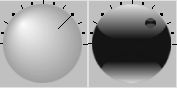
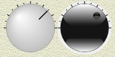

|
class Knob : public Ctrl
As seen in layout designer
|
As seen in program
|

|

|
|
Knob shows a knob handle
Knob()
Initializes Knob.
virtual void SetData(const Value& v)
Sets the value to v.
virtual Value GetData() const
Gets the value of the control.
void Inc(double st)
Increments the value of control with st.
void Dec(double st)
Decrements the value of control with st.
Knob& ClockWise(bool v)
If v is true the value increasing is clockwise, else is counterclockwise.
Knob& SetMin(double v)
Sets v as the min display value.
Knob& SetMax(double v)
Sets v as the max display value.
Knob& SetMinorStep(double v)
Sets v as the value between minor display ticks.
If this value:
is not multiple of the major step between clicks, it is rounded.
is bigger than the major step between clicks, it is equaled to it.
Knob& SetMajorStep(double v)
Sets v as the value between major display ticks.
If this value is not multiple of the difference between max and min values, it is rounded.
Knob& SetMinorMarks(int n)
Sets n as the number of minor marks between two major marks.
Knob& SetMajorMarks(int n)
Sets n as the number of major marks between min and max values.
Knob& SetKeyStep(double fs = 1)
Sets fs as the value to increment or decrement the control value when handled with keyboard keys Up-Right, Down-Left, PgUp and PgDown.
Knob& SetAngleBegin(double v)
Sets v as the angle in degrees for the min value.
Knob& SetAngleEnd(double v)
Sets v as the angle in degrees for the max value.
Knob& SetNumber(bool b)
If v is true numbers will appear every step mark.
Knob& SetInterlocking(bool b = true)
If b is true the only valid values will be the values in minor and major marks.
If Knob is set to an intermediate value, Knob value and position will be forced to the closest mark.
Knob& SetColorType(int c)
Sets with c the Knob color type. Valid values are: SimpleWhiteType, SimpleBlackType, WhiteType, BlackType.
Knob& SetMark(int c)
Sets with c the Knob mark type. Valid values are: NoMark, Line, Circle.
Knob& SetStyle(int c)
Sets with c the Knob style. Valid values are: Simple, Rugged.
Callback WhenSlideFinish
Sets the function to be called after a control movement has been done with mouse or keyboard.
|
{kind=link}
{kind=link}